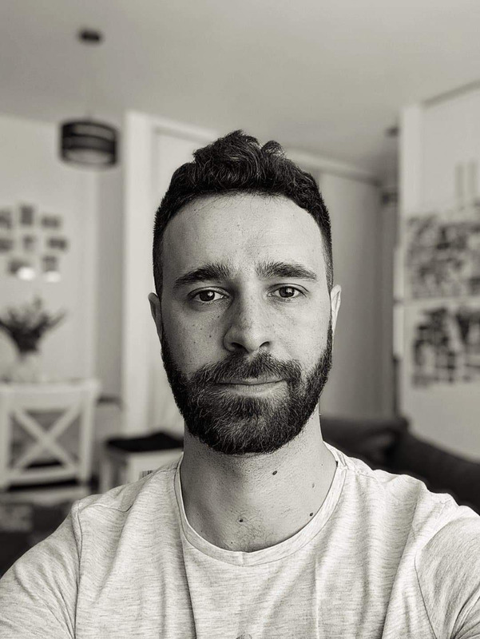

Personal Profile
I am a passionate software engineer with great attention to details. I am a team player
and
most
of my experience is as a
full stack developer on complex projects.
Areas of expertise
Full-stack developer:
-
AWS, ASP .NET Core API, REST
-
ASP. NET MVC, Windows Services
-
Angular 2+, TypeScript
-
HTML , CSS, SCSS, JQuery, Bootstrap 4+
-
SQL Server, My Sql
-
Agile, SCRUM
Other Skills
-
The ability to analyze complex technical information
-
Developing and maintaining complex solutions
-
Detail oriented
-
Excellent problem solver
-
Good mentoring skills
Work experience
Bioinformatics Engineering Manager
Senior Software engineer
Qiagen 2020-2023
-
Working as a full stack developer on complex applications in bioengineering field.
Responsible for the frontend and backend architecture.
-
Features implementation from database (MySQL), trough API's (.NET Core) to
frontend (Angular 2+). The applications are deployed in AWS. We also use AWS for json
files management
-
Migrate Windows forms application to .Net Core API + Angular 2+ client. This is not just
a migration but also a rethinking of user flows, UI/UX, performance improvement and also
new features. Also the database was redesigned to beter fit our needs.
-
Team management, mentoring and coaching
- Product owner: Create specifications with the stakeholders and refine them with the team
Software engineer
Globant 2017-2020
-
Working on complex applications in the fuel delivery industry
-
Features implementation from database, trough API's (.NET Core) to
frontend (Angular 2+)
-
Maintaining monolith applications and migrating
such solutions to better fit client's needs
Fortech 2015 - 2017
-
Main activity was developing software for the leading grocery retailers in US.
-
using Agile development practices
-
Technologies: Web API, Asp .NET MVC, Knockout, JQuery, Javascript, CSS 3, HTML 5, SQL
Server, grunt, Windows Forms
Software developer
Accenture 2012 – 2015
-
Main activity was developing and maintaining .NET solutions in Visual
Studio 2012 and 2013, .NET Framework 4 and 4.5
-
Projects of payment solutions using web services, ASP.NET MVC
-
Agile development practices for all the projects
Junior Software developer
RECUS SpA 2011 – 2012
-
Main activity was developing and maintaining solutions in Microsoft ecosystem
-
Implementing features on desktop and web applications, windows services for automated
processes
-
Gathering requirement from the client in their native language which was Italian
Open source:
Developing and maintaining
spread-table, an Angular 2+ table
Education and Training
Certifications:
MTA: Web Development Fundamentals from Microsoft - 2014
TECHNICAL UNIVERSITY OF CLUJ-NAPOCA, ROMANIA
Bachelor of Computer Science Engineering, 2011
National College "Gheorghe Sincai", Baia Mare Romania - 2007
Popular Art School "Liviu Borlan", Baia Mare Romania